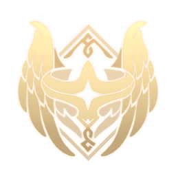
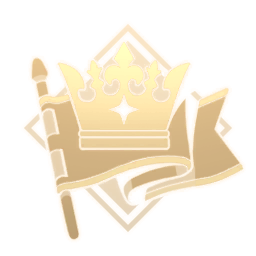
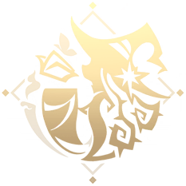

Teyvat's world was shaped by ancient forces long before mortals walked its lands. Legends speak of a primordial era where the very fabric of reality was woven, giving rise to the seven nations and the elemental energies that define them. This foundational period set the stage for the divine and mortal interplay that continues today.

Each of Teyvat's seven nations is governed by an Archon, powerful beings who embody the ideals of their people. These divine rulers maintain balance and order, drawing from the elements to protect their domains. Their presence ensures that harmony prevails amidst the world's diverse cultures and landscapes.
At the heart of Teyvat lies the seven elements—Anemo, Geo, Electro, Dendro, Hydro, Pyro, and Cryo. These fundamental forces are not just tools for combat but the essence of life itself, influencing everything from nature's cycles to the abilities of its inhabitants. Understanding them reveals the interconnectedness of all things in this world.

Before the current era, advanced civilizations flourished in Teyvat, leaving behind ruins and artifacts that hint at their wisdom. These lost societies contributed to the world's knowledge, from forgotten technologies to enduring philosophies. Their legacies continue to influence the present, reminding travelers of the depth of Teyvat's history.
Today, Teyvat is a place of ongoing change, where new challenges and discoveries emerge. Themes of freedom, contracts, eternity, and wisdom guide the nations, encouraging exploration and growth. As travelers journey through the lands, they uncover layers of meaning that connect the past to the future.